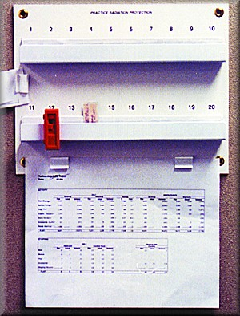

11 Step Wedge Pentrometer

| Stock # | Description | Price | ||
|---|---|---|---|---|
| 5001 | Pentrometer 11 step Wedge, high purity 2024 aluminum | $155.77 | ||
The Speedmaster PT-11 Penetrometer is an 11-Step wedge made of high quality aluminum type 2024. It is used in quality assurance for medical x-ray and NDT applications.
Ideal for...
FOG TESTING
mAs LINEARITY
CONTRAST versus kVp
FILM COMPARISON
SCREEN COMPARISON
It features 3/16th inch recessed lead step identification numerals that will stay in place. The type 2024 aluminum ensures uniform penetration densities across the entire width of the material.
Dimensions:
5" long
2" wide
Height starting at 3/16th increasing in increments of the same to 1 3/8 at the highest point
Ideal for...
FOG TESTING
mAs LINEARITY
CONTRAST versus kVp
FILM COMPARISON
SCREEN COMPARISON
It features 3/16th inch recessed lead step identification numerals that will stay in place. The type 2024 aluminum ensures uniform penetration densities across the entire width of the material.
Dimensions:
5" long
2" wide
Height starting at 3/16th increasing in increments of the same to 1 3/8 at the highest point